토목기사 (2005-03-20 기출문제)
1과목: 응용역학
1. 그림과 같은 캔틸레버 트러스에서 DE 부재의 부재력은?
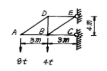
- 4t
- 5t
- 6t
- 8t
(정답률: 65%)

2. 그림과 같이 연결부에 두힘 5t 과 2t 이 작용한다. 평형을 이루기 위해서는 두힘 A 와 B 의 크기는 얼마가 되어야 하는가? (문제 오류로 현재 복원중입니다. 보기 내용을 아시는 분들께서는 오류 신고를 통하여 보기 작성 부탁 드립니다. 정답은 2번입니다.)
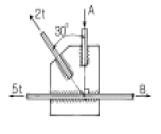
- 복원중
- 복원중
- 복원중
- 복원중
(정답률: 47%)
3. 다음의 1차 부정정보에서 A점의 반력 RA는 얼마인가? (단, EI는 일정) (문제 오류로 현재 복원중입니다. 보기 내용을 아시는 분들께서는 오류 신고를 통하여 보기 작성 부탁 드립니다. 정답은 4번입니다.)
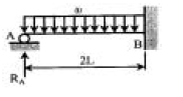
- 복원중
- 복원중
- 복원중
- 복원중
(정답률: 58%)
4. 그림과 같은 단순보에서 허용휨응력 fba=50kg/cm2 허용전 단응력 τa=5kg/cm2 일 때 하중 P의 한계치는?
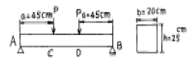
- 1666.7 kg
- 2516.7 kg
- 2500.0 kg
- 2314.8 kg
(정답률: 34%)
5. 아래 그림과 같은 연속보가 있다. B점과 C점 중간에 10t의 하중이 작용할 때 B 점에서의 휨모멘트 M은? (단, 탄성계수 E 와 단면 2차 모멘트 I 는 전구간에 걸쳐 일정하다.)
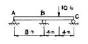
- -5 t·m
- -7.5 t·m
- -10 t·m
- -15 t·m
(정답률: 36%)
6. 그림과 같은 단주에 하중 P=1t이 편심거리 e인 곳에 작용 하고 있다. 이때 단면에 인장력이 생기지 않기 위한 e 의한계는?
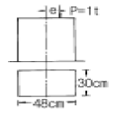
- 16 cm
- 12 cm
- 6 cm
- 8 cm
(정답률: 70%)
7. 직사각형 단면 20cm×30cm을 갖는 양단 고정지점부재의 길이가 L=5m이다. 이 부재에 25℃의 온도상승으로 인하여 180t의 압축력이 발생하였다면 이 부재의 전단탄성계수는 얼마인가? (단, 선팽창계수는 α=0.6×10-5/℃, 프와송비ν= 0.25 이다)
- 800,000kg/cm2
- 120,000kg/cm2
- 160,000kg/cm2
- 400,000kg/cm2
(정답률: 17%)
8. 다음 그림과 같이 1000㎏의 차바퀴가 5㎝의 턱을 넘으려면 필요한 최소의 힘 P 는?
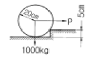
- 985 ㎏
- 928 ㎏
- 866 ㎏
- 882 ㎏
(정답률: 23%)
9. 그림의 각 도심을 통하는 축 x-x 에 대한 단면 2차 모멘트의 크기 순서가 옳은 것은?
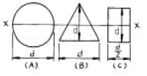
- A > B > C
- A > C > B
- B > C > A
- C > A > B
(정답률: 44%)
10. 그림과 같은 단순보에 휨모멘트 하중 M이 B단에 작용할 때A 점에서의 접선각 θa는? (단, 보의 휨강성은 EI 임) (문제 오류로 현재 복원중입니다. 보기 내용을 아시는 분들께서는 오류 신고를 통하여 보기 작성 부탁 드립니다. 정답은 3번입니다.)
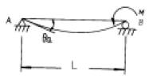
- 복원중
- 복원중
- 복원중
- 복원중
(정답률: 43%)
11. 다음 외팔보에서 최대 처짐 δmax 는? (단, 보의 휨강성은 EI 이다.) (문제 오류로 현재 복원중입니다. 보기 내용을 아시는 분들께서는 오류 신고를 통하여 보기 작성 부탁 드립니다. 정답은 4번입니다.)
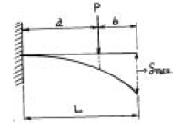
- 복원중
- 복원중
- 복원중
- 복원중
(정답률: 32%)
12. 그림의 보에서 G는 활절(hinge)이다. G에서의 휨모멘트 M과 전단력 S가 옳게 짝지어진 것은?
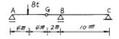
- M = 0, S = 0
- M = 0, S = -4t
- M = -32t·m, S = 0
- M = -32t·m, S = -4t
(정답률: 43%)
13. 그림과 같은 트러스의 C점에 300kg의 하중이 작용할 때 C점에서의 처짐을 계산하면? (단, E=2× 106kg/cm2, 단면적=1cm2)
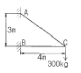
- 0.158cm
- 0.315cm
- 0.473cm
- 0.630cm
(정답률: 알수없음)
14. 다음 봉의 내부에 저장되는 변형에너지(strain energy)는 얼마인가? (단, P : 인장하중, δ: 신장의 크기, A : 봉의 단면적, E : 탄성계수, U : 변형에너지) (문제 오류로 현재 복원중입니다. 보기 내용을 아시는 분들께서는 오류 신고를 통하여 보기 작성 부탁 드립니다. 정답은 1번입니다.)
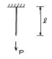
- 복원중
- 복원중
- 복원중
- 복원중
(정답률: 45%)
15. 그림과 같은 보 C점의 휨 모멘트는 얼마인가?
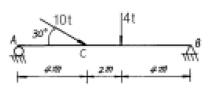
- 18.4 t·m
- 28.0 t·m
- 30.4 t·m
- 32.4 t·m
(정답률: 50%)
16. 그림에서 직사각형의 도심축에 대한 단면상승 모멘트 Ixy의 크기는?
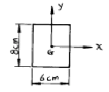
- 576 cm4
- 256 cm4
- 142 cm4
- 0 cm4
(정답률: 67%)
17. 그림 (a)의 장주가 4t에 견딜수 있다면 그림 (b)의 장주가 견딜 수 있는 하중은?
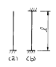
- 4t
- 16t
- 32t
- 64t
(정답률: 29%)
18. 응력 집중에 대한 설명 중 틀린 것은?
- 정하중을 받는 취성재료는 응력집중의 효과가 크게 일어난다.
- 응력 집중을 감소시키기 위하여 완만한 필렛(fillet) 모양을 준다.
- 응력집중계수 K는 최대응력의 공칭응력에 대한 비이다.
- 정하중을 받는 연성재료는 응력집중의 효과가 크게 일어난다.
(정답률: 22%)
19. 폭 10cm, 높이 15cm인 직사각형 단면의 보가 S=0.7t의 전단력을 받을 때 최대전단응력도와 평균전단응력도와의 차이는 몇 kg/cm2 인가?
- 1.3
- 2.3
- 3.3
- 4.3
(정답률: 13%)
20. 다음과 같은 구조물에서 D 점의 연직반력은 얼마인가?
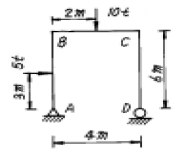
- 10 t
- 7.5 t
- 5 t
- 8.75 t
(정답률: 30%)
2과목: 측량학
21. 축척 1/50,000 지형도에서 990m의 산정과 510m의 산중턱간에 들어가는 계곡선의 수는? (단, 주곡선의 간격은 축척 분모수의 1/2,500으로 한다.)
- 2개
- 3개
- 4개
- 5개
(정답률: 50%)
22. 그림에서 변 AB=500m, ∠a=71°33′54″,∠b1=36°52′12″, ∠b2=39°⑤′38″, ∠c=85°36′⑤″를 측정하였을 때 변 BC의 거리는?
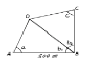
- 391m
- 412m
- 422m
- 427m
(정답률: 40%)
23. 다음 중 항공사진의 특수 3점이 아닌 것은?
- 주점
- 보조점
- 연직점
- 등각점
(정답률: 알수없음)
24. 단곡선 설치에 있어서 교각 I=60° , 반경 R=200m, 곡선의 시점 B.C.= No.8+15m(20m× 8+15m)일 때 종단현에 대한 편각은 얼마인가?
- 38′ 10″
- 42′ 58″
- 1° 16′ 20″
- 2° 51′ 53″
(정답률: 19%)
25. AB 두점간의 거리를 측정하여 327.34±0.04m, 327.30±0.08m의 결과를 얻었을 때 AB 두점간 거리에 대한 최확값은?
- 327.318m
- 327.320m
- 327.327m
- 327.332m
(정답률: 28%)
26. 다음과 같은 삼각형 ABC의 넓이는?
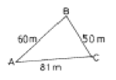
- 153.04m2
- 235.09m2
- 1495.57m2
- 2227.50m2
(정답률: 50%)
27. 수평각 관측법 중 1등삼각측량에 주로 사용하며 정확도가 가장 높은 방법은?
- 단측법
- 배각법
- 방향각법
- 조합각 관측법
(정답률: 36%)
28. 트래버스 측량에서 거리 측정의 오차가 100m에 대하여 ±1.0mm인 경우 이에 상응하는 측각 오차는?
- ±4.1초
- ±3.1초
- ±2.1초
- ±1.1초
(정답률: 28%)
29. A, B, C 세 사람이 같은 조건에서 한 각을 측정하였다. A는 1회 측정에 45°20′37″, B는 4회 측정하여 평균 45°20′32″, C는 8회 측정하여 평균 45°20′33″를 얻었다. 이 각의 최확치는?
- 45°20′38″
- 45°20′37″
- 45°20′33″
- 45°20′30″
(정답률: 43%)
30. 트랜싯(K=100, C=0)을 사용하여 협장=1m, 고저각=30°의 관측결과를 얻었다. 이 관측에서 K에 △K=±0.2의 오차가 포함되었다면 수평거리에 미치는 영향은 얼마인가?
- ±5.0cm
- ±10.0cm
- ±15.0cm
- ±17.3cm
(정답률: 9%)
31. 사진의 크기는 23cm×23cm이고 두 사진의 주점기선 길이가 10cm일 때 종중복도는 약 얼마인가?
- 43%
- 64%
- 57%
- 78%
(정답률: 44%)
32. 30m에 대하여 3㎜ 늘어져 있는 줄자로써 정방형의 지역을 측정한 결과 62500m2 이었다. 실제의 면적은 얼마인가?
- 62512.5m2
- 62⑤0.3m2
- 62535.5m2
- 62500.3m2
(정답률: 58%)
33. 수준측량의 야장기입방법 중 가장 간단한 방법으로 전시(B.S.)와 후시(F.S.)만 있으면 되는 방법은?
- 고차식
- 이란식
- 기고식
- 승강식
(정답률: 34%)
34. 완화곡선에 대한 설명 중 옳지 않은 것은?
- 완화곡선은 모든 부분에서 곡률이 같다.
- 완화곡선의 반지름은 무한대에서 시작한 후 점차 감소되어 주어진 원곡선에 연결된다.
- 완화곡선의 접선은 시점에서 직선에 접한다.
- 완화곡선에 연한 곡선 반지름의 감소율은 캔트의 증가율과 같다.
(정답률: 27%)
35. 노선측량에서 교각이 32°15′00″, 곡선 반지름이 600m일때의 곡선장은?
- 337.72m
- 355.52m
- 315.35m
- 328.75m
(정답률: 60%)
36. 기지점 A에 평판을 세우고 B점에 수직으로 표척을 세우고 시준하여 눈금 12.4와 9.3을 얻었다. 표척 실제의 상하간격이 2m일 때 AB 두 지점의 거리는?
- 32.2m
- 64.5m
- 96.8m
- 21.5m
(정답률: 34%)
37. 두점 A, B의 좌표가 XA=250.50m, XB=-150.50m, YA=200.45m, YB=-200.55m일 때 측선 AB의 방위각은?
- 45°
- 135°
- 225°
- 315°
(정답률: 11%)
38. 직접수준측량 실시결과 다음과 같다. A점의 지반고가 17.22m일 때 건물 내부천정 D점의 지반고는?
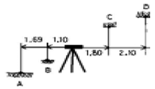
- 21.01m
- 22.66m
- 23.00m
- 24.69m
(정답률: 알수없음)
39. 축척 1/25,000의 항공사진을 속도 180km/h로 촬영할 경우에 허용흔들림을 사진상에서 0.01mm로 한다면 최장 허용 노출 시간은? (문제 오류로 현재 복원중입니다. 보기 내용을 아시는 분들께서는 오류 신고를 통하여 보기 작성 부탁 드립니다. 정답은 2번입니다.)
- 복원중
- 복원중
- 복원중
- 복원중
(정답률: 20%)
40. 캔트의 계산에서 속도 및 반경을 2배로 하면 캔트는 몇배가 되는가?
- 2배
- 1/2배
- 4배
- 1/4배
(정답률: 알수없음)
3과목: 수리학 및 수문학
41. Darcy의 법칙은 지하수의 유속을 논한 것이다. 지하수의 유속에 대한 설명으로 옳은 것은?
- 수온(水溫)에 비례한다.
- 수심(水深)에 비례한다.
- 영향권의 반지름에 비례한다.
- 동수경사(動水傾斜)에 비례한다.
(정답률: 40%)
42. 동수경사선에 관한 설명으로 옳은 것은?
- 항상 에너지선 위에 있다.
- 항상 관로 위에 있다.
- 항상 흐름방향에 따라 아래로 기울어 진다.
- 항상 에너지선에서 속도수두만큼 아래에 있다.
(정답률: 31%)
43. 유역면적이 3km2인 유역에 강우강도 10mm/hr의 강우가 6시간 내렸다. 이 기간동안 측정된 유출량이 90,000m3일 경우 총손실량은?
- 3mm/hr
- 5mm/hr
- 6mm/hr
- 8mm/hr
(정답률: 6%)
44. 폭이 50m인 직사각형 수로의 도수 전 수위(h1)는 3m, 유량(Q)은 2000m3/sec일 때 대응수심은?
- 1.6m
- 6.1m
- 9.0m
- 도수가 발생하지 않는다.
(정답률: 34%)
45. 강우강도와 지속시간 관계를 표시하는 sherman형 식으로 맞는 것은? (단, 여기서 I:강우강도(mm/hr), t:지속시간, a,b,c,d,e및 n은 지역에 따른 상수를 나타낸다.) (문제 오류로 현재 복원중입니다. 보기 내용을 아시는 분들께서는 오류 신고를 통하여 보기 작성 부탁 드립니다. 정답은 2번입니다.)
- 복원중
- 복원중
- 복원중
- 복원중
(정답률: 62%)
46. 단면적 20㎝2인 원형 오리피스(orifice)가 수면에서 3m의 깊이에 있을 때, 유출수의 유량은? (단, 물통의 수면은 일정하고 유량계수는 0.6이라 한다.)
- 0.0092m3/sec
- 15.2400m3/sec
- 0.0014m3/sec
- 14.4400m3/sec
(정답률: 알수없음)
47. 측정된 강우량 자료가 기상학적 원인 이외에 다른 영향을 받았는지의 여부를 판단하는 즉, 일관성(consistency)에 대한 검사방법은?
- 순간 단위 유량도법
- 합성 단위 유량도법
- 이중 누가 우량 분석법
- 선행 강수 지수법
(정답률: 39%)
48. 질량보존의 법칙과 관계가 있는 것은?
- 연속 방정식
- 열역학 제 1법칙
- 베르누이 방정식
- 오일러 방정식
(정답률: 29%)
49. 내경 600㎜의 송수관 내에 유량 2m3/sec가 흐를 때 평균유속은 얼마인가?
- 6.9m/sec
- 7.1m/sec
- 7.4m/sec
- 7.9m/sec
(정답률: 30%)
50. 면적이 10㎞2인 유역에 10.0㎜의 강우가 1시간 동안 내렸을 때 첨두유량을 합리식으로 계산한 값은? (단, 유출계수는 0.6이다.)
- 6.0m3/sec
- 60.0m3/sec
- 1.67mm3/sec
- 16.67m3/sec
(정답률: 알수없음)
51. 오리피스에서 Cc를 수축계수, Cv를 유속계수라 할 때 실제유량과 이론유량과의 비(C)는?
- C = Cc·Cv
- C = Cc / Cv
- C = Cv
- C = Cc
(정답률: 46%)
52. 관길이 ℓ=50m, D=0.8m, n=0.013으로 Q=1.2m3/s를 흐르게 하려면 수위차(H)를 얼마로 하면 되겠는가? (단, 마찰, 입구, 출구손실만을 고려할 것.)
- H = 0.85m
- H = 0.54m
- H = 0.36m
- H = 0.98m
(정답률: 15%)
53. 빙산의 비중이 0.92이고 바닷물의 비중은 1.025일 때 빙산이 바닷물 속에 잠겨있는 부분의 부피는 수면 위에 나와있는 부분의 약 몇 배인가?
- 10.8배
- 8.8배
- 4.8배
- 0.8배
(정답률: 알수없음)
54. 어떤 지역에 내린 총 강우량 75mm의 시간적분포가 다음 우량주상도로 나타났다. 이 유역의 출구에서 측정한 지표유출량이 33mm이었다면 ø-Index는?
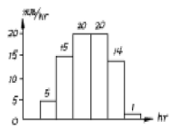
- 9mm/hr
- 8mm/hr
- 7mm/hr
- 6mm/hr
(정답률: 20%)
55. 다음중 지배단면(支配斷面)이 생기는 경우는?
- 상류(常流)에서 사류(射流)로 될 때
- 사류에서 상류로 될 때
- 등류에서 부등류로 될 때
- 부등류에서 등류로 될 때
(정답률: 47%)
56. 지름 80㎝의 원형단면 관수로를 물이 가득차서 흐를 때의 동수반경(動水半經)은?
- 10㎝
- 20㎝
- 40㎝
- 80㎝
(정답률: 50%)
57. 원형 댐의 월류량이 400m3/sec 이고 수문을 개방하는데 필요한 시간이 40초라 할 때 1/50 모형(模形)에서의 유량과 개방 시간은? (단, gr 은 1로 본다.)
- Qm = 0.0226m3/sec, Tm = 5.657sec
- Qm = 1.6232m3/sec, Tm = 0.825sec
- Qm = 56.560m3/sec, Tm = 0.825sec
- Qm = 115.00m3/sec, Tm = 5.657sec
(정답률: 46%)
58. 단위 유량도(unit hydrograph)를 작성함에 있어서 3가지의 주요 기본 가정(또는 원리)으로 짝지어진 것은?
- 비례가정, 중첩가정, 일정기저시간의 가정
- 직접유출의 가정, 중첩가정, 일정기저 시간의 가정
- 일정기저 시간의 가정, 직접유출의 가정, 비례가정
- 비례가정, 중첩가정, 직접유출의 가정
(정답률: 32%)
59. 한계수심에 대한 설명으로 옳지 않은 것은?
- 일정한 유량에 대하여 비에너지가 최소인 경우의 수심을 말한다.
- 수로단면형이 직사각형인 경우 비에너지(E)의 2/3에 해당된다.
- 일정한 에너지에 대하여 최소 유량으로서 흐를 때의 수심을 말한다.
- Froude 수가 1이 될 때의 수심을 말한다.
(정답률: 45%)
60. 그림과 같은 투수층내를 흐르는 유량은? (단, h=10cm, 투수계수 k = 1m/day임)
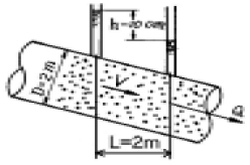
- 0.785m3/day
- 0.314m3/day
- 0.157m3/day
- 3.14m3/day
(정답률: 0%)
4과목: 철근콘크리트 및 강구조
61. 고정하중(D)과 활하중(L)이 작용하는 경우 소요강도를 올바르게 나타낸 것은?
- 1.2D + 1.5L
- 0.9D + 1.3L
- 1.4D + 1.7L
- 1.7D + 1.3L
(정답률: 0%)
62. 강도 설계시 T형보에서 t=100mm, d = 300mm, bw = 200mm, fck = 20MPa , fy = 420MPa , As = 2000mm2, b = 800mm일때 등가 응력 사각형의 깊이는?
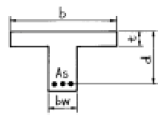
- 51.8mm
- 61.8mm
- 71.8mm
- 81.8mm
(정답률: 62%)
63. 다음은 용접이음에 관한 설명이다. 옳지 않은 것은?
- 리벳구멍으로 인한 단면 감소가 없어서 강도 저하가 없다.
- 내부 검사(X-선 검사)가 간단하지 않다.
- 작업의 소음이 적고 경비와 시간이 절약된다.
- 리벳이음에 비해 약하므로 응력 집중 현상이 일어나지 않는다.
(정답률: 39%)
64. 2방향 슬래브의 직접설계법에서 분배되는 내부경간의 전체정적 계수휨모멘트(Mo)의 분배값은 어느 것인가?
- 부(-)계수휨모멘트=0.65Mo, 정(+)계수 휨모멘트=0.30Mo
- 부(-)계수휨모멘트=0.75Mo, 정(+)계수 휨모멘트=0.25Mo
- 부(-)계수휨모멘트=0.65Mo, 정(+)계수 휨모멘트=0.35Mo
- 부(-)계수휨모멘트=0.75Mo, 정(+)계수 휨모멘트=0.50Mo
(정답률: 36%)
65. b = 300mm, d = 600mm, As = 3-D35 = 2870mm2인 직사각형 단면보의 파괴 양상은? (단, 강도 설계법에 의한 fy = 300MPa, fck = 21MPa이다.)
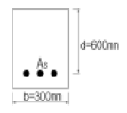
- 취성파괴
- 연성파괴
- 균형파괴
- 파괴되지 않는다.
(정답률: 29%)
66. 설계휨강도가 φMn=350kN·m인 단철근 직사각형 보의 유효깊이 d는? (단, 철근비 ρ=0.014, b=350mm, fck = 21MPa, fy = 350MPa)
- 462mm
- 528mm
- 574mm
- 651mm
(정답률: 25%)
67. 압축철근을 사용하는 이유로서 타당성이 가장 적은 것은?
- 연성을 증가시킨다.
- 철근의 조립을 쉽게한다.
- 공칭 휨강도 Mn을 증가시킨다.
- 지속하중에 의한 처짐을 감소시킨다.
(정답률: 18%)
68. 종류가 다른 하중을 받는 부재의 강도감소계수 φ값을 나타낸 것 중 옳지 않은 것은?
- 휨모멘트를 받는 보통 철근콘크리트 부재 : 0.85
- 축인장력을 받는 부재 : 0.80
- 나선철근으로 보강된 축방향 압축부재 : 0.75
- 무근콘크리트의 휨모멘트를 받는 부재 : 0.55
(정답률: 10%)
69. 계수 전단력 Vu = 70kN을 전단철근없이 지지하고자 할 경우 필요한 최소 유효깊이 d는 얼마인가? (단, b = 400mm, fck = 21MPa, fy = 350MPa)
- d = 326mm
- d = 456mm
- d = 573mm
- d = 651mm
(정답률: 7%)
70. 철근의 이음에 대한 설명중 옳지 않은 것은?
- 용접이음은 철근의 설계기준항복강도 fy의 125% 이상을 발휘할 수 있는 완전용접이어야 한다.
- 기계적 연결은 철근의 설계기준항복강도 fy의 125% 이상을 발휘할 수 있는 완전 기계적 연결이어야 한다.
- 압축철근의 겹침이음 길이는 인장철근의 겹침이음 길이보다 길게 하여야 한다.
- D35를 초과하는 철근은 겹침이음을 하지 않아야 한다.
(정답률: 32%)
71. PS콘크리트보에서 PS강재를 포물선으로 배치하여 긴장하는 경우 등분포의 상향력 U의 크기는 얼마인가? (단, P=3000kN, S=0.2m이며, 단면은 b=400mm, h=600mm)
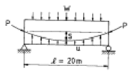
- 8kN/m
- 10kN/m
- 12kN/m
- 18kN/m
(정답률: 37%)
72. 철근콘크리트 부재의 장기처짐량은 해당 하중에 의한 탄성처짐에 계수 λ를 곱해서 얻어진다. 다음 조건에 대한 λ의 값은 얼마인가?
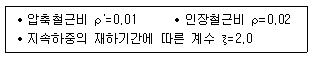
- λ=1.0
- λ=2.0
- λ=1.42
- λ=1.33
(정답률: 알수없음)
73. 프리스트레스트 콘크리트의 설계에 관한 내용 중 옳은 것은?
- 설계단면의 산정은 탄성이론에 따르는 것을 원칙으로 한다.
- 프리스트레싱에 의해 발생되는 응력집중은 설계시 고려 하지 않아도 된다.
- 프리스트레싱 긴장재가 부착되기 전에 단면 특성을 계산할 경우 덕트로 인한 단면적의 손실을 고려하지 않아도 된다.
- 프리텐셔닝 강연선이 길게 노출되었을 때 콘크리트가 받는 충격을 최소화하기 위해 가급적 부재 멀리서 강연선을 절단하여야 한다
(정답률: 25%)
74. 나선철근 압축부재 단면의 심부지름이 400mm, 기둥단면 지름이 500mm 인 나선철근 기둥의 나선철근비는 얼마 이상이어야 하는가? (여기서, fck=24MPa,fy=400MPa)
- 0.0101
- 0.0152
- 0.0206
- 0.0254
(정답률: 44%)
75. 옹벽의 안정조건 중 전도에 대한 저항모멘트는 횡토압에의한 전도모멘트의 최소 몇 배 이상이어야 하는가?
- 1.5배
- 2.0배
- 2.5배
- 3.0배
(정답률: 22%)
76. 철근콘크리트 보에서 전단력이 큰 부분에 배근하는 경우 특히 필요한 사항은?
- 스터럽(Stirrup)를 조밀하게 넣는다.
- 압축 철근을 충분히 넣는다.
- 인장철근을 충분히 넣는다.
- 철근의 이음길이를 충분히 한다.
(정답률: 25%)
77. 그림과 같은 맞대기 용접의 용접부에 생기는 인장응력은 얼마인가 ?
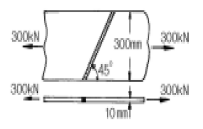
- 50 MPa
- 70.7 MPa
- 100 MPa
- 141.4 MPa
(정답률: 59%)
78. 그림과 같은 단철근 직사각형보에서 등가 응력 깊이 a로 옳은 것은? (단, fck = 20MPa, fy = 300MPa, d=500cm, b=300mm, As=1700mm2)
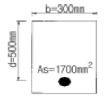
- a = 100 mm
- a = 120 mm
- a = 140 mm
- a = 160 mm
(정답률: 50%)
79. 단면 400 ×500mm이고 150mm2의 PSC강선 4개를 단면 도심축에 배치한 프리텐션 PSC부재가 있다. 초기 프리스트레스 1000MPa일 때 콘크리트의 탄성변형에 의한 프리스트레스 감소량의 값은? (단, n = 6)
- 22MPa
- 20MPa
- 18MPa
- 16MPa
(정답률: 69%)
80. 직사각형 보에서 전단철근이 부담해야 할 전단력 Vs가 300kN일 때 전단철근의 간격 s는 최대 얼마 이하라야 하는가? (단, 수직스터럽의 단면적 Av=700mm22, bw=350mm, d=600mm, fck=21MPa, fy=400MPa이다.)
- 250mm
- 300mm
- 350mm
- 560mm
(정답률: 36%)
5과목: 토질 및 기초
81. 다짐효과에 대한 다음 설명중 옳지 않은 것은?
- 부착력이 증대하고 투수성이 감소한다.
- 전단강도가 증가한다.
- 상호간의 간격이 좁아져 밀도가 증가한다.
- 압축성이 커진다.
(정답률: 알수없음)
82. 그림과 같은 3가지 흙에 대한 입도곡선이 있다. 다음 설명 중 틀린 것은?
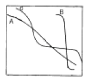
- A흙이 B흙에 비해 균등계수가 크다.
- A흙이 B흙에 비해 곡률계수가 크다.
- A, B, C흙 중 A흙의 입도가 가장 양호하다.
- C흙은 2종류의 흙을 합친 경우에 나타날 수 있다.
(정답률: 48%)
83. 그림과 같은 실트질 모래층에 지하수면 위 2.0m까지 모세 관영역이 존재한다. 이때 모세관영역(높이 B의 바로 아래)의 유효응력은? (단, 실트질 모래층의 간극비는 0.50, 비중은 2.67, 모세관 영역의 포화도는 60%이다.)
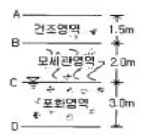
- 2.67t/m2
- 3.67t/m2
- 3.87t/m2
- 4.67t/m2
(정답률: 22%)
84. 암반층 위에 5m 두께의 토층이 경사 15°의 자연사면으로 되어 있다. 이 토층은 C'=1.5t/m2, φ'=30°,γt=1.8t/m3이고, 지하수면은 토층의 지표면과 일치하고 침투는 경사면과 대략 평행이다. 이 때의 안전율은?
- 0.8
- 1.1
- 1.6
- 2.0
(정답률: 48%)
85. 흙이 동상작용을 받으면 이 흙은 동상작용을 받기 전의 흙에 비해 함수비의 변화는 어떻게 되는가?
- 감소한다.
- 증가한다.
- 일정하다.
- 증가하거나 감소한다.
(정답률: 0%)
86. 다음중 지하연속벽 공법이 아닌 것은?
- Soletanche 공법
- PIP 공법
- ICOS 공법
- GOW 공법
(정답률: 10%)
87. 그림과 같은 정수 중에 있는 포화토의 A-A'면에서의 유효응력은?
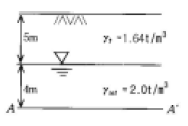
- 12.2t/m2
- 16.0t/m2
- 1.22t/m2
- 1.60t/m2
(정답률: 50%)
88. 어떤 흙 1,200g(함수비 20%)과 흙 2,600g(함수비 30%)을 섞으면 그 흙의 함수비는 대략 얼마인가?
- 21.1%
- 25.0%
- 26.7%
- 29.5%
(정답률: 55%)
89. 수평방향의 투수계수(kh)가 0.4㎝/sec이고 연직방향의 투수계수(kv)가 0.1㎝/sec일 때 등가 투수계수를 구하면?
- 0.20㎝/sec
- 0.25㎝/sec
- 0.30㎝/sec
- 0.35㎝/sec
(정답률: 알수없음)
90. 토압의 종류와 설계에 이용하는 토압에 관한 기본적 설명중 적절하지 않는 것은?
- 일반적으로 옹벽에서 약간의 변위를 허용할 경우 토압은 주동토압을 대상으로 설계한다.
- 지하벽이나 고정이 필요한 교대의 경우 정지토압을 대상으로 한다.
- 옹벽전면의 근입 깊이가 깊은 경우 옹벽 전면에는 수동토압으로 산정된다.
- 토압의 크기는 정지토압에 비교하여 수동토압이 작고 주동토압이 크다.
(정답률: 50%)
91. 지하수위 아래에 존재하는 가는 모래층에 대해 표준관입시험(S.P.T)을 행한 결과 N치가 20이었다. 이 N치를 수정하여 사용할 때 수정 N치는 얼마인가?
- 12
- 14
- 16
- 18
(정답률: 34%)
92. 포화점토를 가지고비압밀 비배수(UU)삼축압축 시험을 한결과 액압 1.0㎏/cm2에서 피스톤에 의한 축차 압력 1.5㎏/cm2일때 파괴되었고 이때의 공극수압이 0.5㎏/㎝2만큼 발생되었다. 액압을 2.0㎏/cm2로 올린다면 피스톤에 의한 축차압력은 얼마에서 파괴가 되리라 예상되는가?
- 1.5㎏/cm2
- 2.0㎏/cm2
- 2.5㎏/cm2
- 3.0㎏/cm2
(정답률: 25%)
93. 다음 중 팽창성 점토지반에 공사를 수행할 경우 팽창성을 줄이기 위하여 처리하는 방법이 아닌 것은?
- 연못공법(ponding)
- 치환공법
- 깊은기초
- 진동부유공법
(정답률: 15%)
94. 말뚝을 지반에 박을 때 무진동, 무소음으로 위쪽에 공간이 적을 때 이용하면 좋은 공법은?
- 수사법
- 충격법
- 진동법
- 압입법
(정답률: 40%)
95. 연약한 점토지반의 전단강도를 구하는 현장 시험방법은?
- 평판재하시험
- 현장 함수당량시험
- 베인시험
- 현장 CBR시험
(정답률: 알수없음)
96. 하중을 가한 직후의 과잉공극수압이 10tm22이었고, 얼마의 시간이 지난후 과잉공극수압이 2t/m2로 감소되었다면 압밀도는?
- 20%
- 80%
- 50%
- 12%
(정답률: 알수없음)
97. 폭 10㎝,두께 3㎜인 Paper Drain설계시 Sand drain의 직경과 동등한 값(등치환산원의 지름)으로 볼 수 있는 것은?
- 2.5㎝
- 5.0㎝
- 7.5㎝
- 10.0㎝
(정답률: 30%)
98. 다짐에 대한 다음 설명 중 옳지 않은 것은?
- 세립토의 비율이 클수록 최적함수비는 증가한다.
- 세립토의 비율이 클수록 최대건조 단위중량은 증가한다.
- 다짐에너지가 클수록 최적함수비는 감소한다.
- 최대건조 단위중량은 사질토에서 크고 점성토에서 작다.
(정답률: 34%)
99. 토질조사에 대한 다음 설명 중 옳지 않은 것은?
- 보링(Boring)의 위치와 수는 지형조건과 설계형태에 따라 변한다.
- 보링의 깊이는 설계의 형태와 크기에 따라 변한다.
- 보링 구멍은 사용후에 흙이나 시멘트 그라우트(grout)로 메워야 한다.
- 표준관입시험은 정적인 사운딩이다.
(정답률: 58%)
100. 점성토의 예민비에 대한 설명 중 옳지 않은 것은?
- 예민비는 불교란시료와 교란시료와의 강도차이를 알수있는 재성형 효과를 말한다.
- 예민비의 측정은 보통 일축압축 시험으로 한다.
- 예민비가 크다는 것은 점토가 교란의 영향을 크게 받지않는 양호한 점토지반을 말한다.
- Tschebotarioff는 예민비를 등변형 상태에 있어서의 강도비로 정의 하였다.
(정답률: 62%)
6과목: 상하수도공학
101. 1일 평균 급수량의 특징중 틀린 것은?
- 소도시는 대도시에 비해서 수량이 적다.
- 공업이 번성한 도시는 수량이 크다.
- 일반적으로 문화가 낮은 도시는 고도의 문화 도시보다 수량이 크다.
- 관광지, 온천지는 소비수량이 크다.
(정답률: 50%)
102. 하수관거의 접합방법 중에서 수리학적으로 에너지 경사선이나 계획수위를 일치시켜 접합시키는 방법은?
- 관정 접합
- 관저 접합
- 관중심 접합
- 수면 접합
(정답률: 50%)
103. 하수처리장의 1차 처리시설에서 BOD부하의 40%가 제거되고 2차 처리시설에서 BOD부하의 90%가 제거되었다면 전체 BOD제거율은?
- 78%
- 89%
- 94%
- 96%
(정답률: 59%)
104. 상수도 침전지의 깊이가 4m, 1일 사용수량이 600m3이고 체류시간이 6시간일 때 침전지의 수면적은 대략 얼마가 되겠는가?
- 37.5m2
- 50.5m2
- 150.7m2
- 901.3m2
(정답률: 42%)
1⑤. 하수 맨홀내에 존재할 수 있는 가스 중에서 콘크리트 흄관의 관정 부식에 주된 원인이 되는 것은?
- 탄산가스
- 메탄가스
- 질소
- 황화수소
(정답률: 37%)
106. 활성슬러지법에서 MLSS 농도가 2,000mg/ℓ이고 BOD농도가 200mg/ℓ이다. 폭기조내 체류시간이 6시간이면 F/M비는 몇kg-BOD/kg-MLSS.day 인가?
- 0.3
- 0.1
- 0.4
- 0.5
(정답률: 40%)
107. 탁질누출현상(break through)이란 어느 처리과정에서 주로 발생하는 현상인가?
- 완속여과
- 급속여과
- 폭기식 침사지
- 이온교환법
(정답률: 24%)
108. 다음중 분류식 우수관거의 설계시 사용하는 유량은?
- 계획시간 최대우수량
- 계획시간 최대우수량의 3배이상
- 계획일일 최대우수량
- 계획우수량
(정답률: 47%)
109. 생물학적 처리를 위한 영양조건으로 하수의 일반적인 BOD : N : P 비는 다음 중 어느 것이 가장 적합한가?
- BOD : N : P = 100 : 50 : 10
- BOD : N : P = 100 : 10 : 1
- BOD : N : P = 100 : 10 : 5
- BOD : N : P = 100 : 5 : 1
(정답률: 29%)
110. 펌프의 공동현상(cavitation)에 대한 설명으로 잘못된 것은?
- 공동현상이 발생하면 소음이 발생한다.
- 공동현상을 방지하려면 펌프의 회전수를 높게 해야 한다.
- 펌프의 흡입양정이 너무 적고 임펠러 회전속도가 빠를 때 공동현상이 발생한다.
- 공동현상은 펌프의 성능 저하의 원인이 될 수 있다.
(정답률: 알수없음)
111. 하수처리장에 적용하는 활성슬러지 공법에서의 MLSS 개념 설명 중 가장 알맞는 것은?
- 유입하수 중의 부유물질
- 폭기조 중의 부유물질
- 반송슬러지 중의 유기물질
- 방류수 중의 유기물질
(정답률: 38%)
112. 다음은 펌프의 전양정을 설명한 것이다. 옳은 것은?
- 전양정 = 실양정
- 전양정 = 실양정 + 손실수두
- 전양정 = 실양정 x 손실수두
- 전양정 = 실양정/손실수두
(정답률: 29%)
113. 하수도 계획에 있어서 계획 우수량 산정시 관계가 없는 것은?
- 유달시간
- 집수매거
- 강우강도
- 지체현상
(정답률: 36%)
114. 회전수 5회/sec, 양수량 23m3/min, 전양정 8m인 터어빈 펌프가 있다. 이 펌프의 비교회전도(비속도, specificspeed)는 대략 얼마인가?
- 5회
- 303회
- 862회
- 1114회
(정답률: 8%)
115. 경도를 연화(軟化)처리하고자 할 때 다음의 어느 처리 방법을 선택하는 것이 가장 적합한 방법이겠는가?
- 유산동살포
- 소다회주입
- 활성탄처리
- 생물산화
(정답률: 29%)
116. 호소에서 조류의 발생을 억제하기 위하여 일반적으로 사용되고 있는 것은?
- 과망간산칼륨
- 차아염소산나트륨
- 황산동
- Zeolite
(정답률: 30%)
117. 부영양화 현상에 대한 특징을 설명한 것으로 알맞지 않는 것은?
- 사멸된 조류의 분해작용에 의해 표수층으로부터 용존산소가 줄어든다.
- 조류합성에 의한 유기물의 증가로 COD가 증가한다.
- 일단 부영양화가 되면 회복되기 어렵다.
- 영양 염류인 인(P), 질소(N) 등의 유입을 방지하면 이 현상을 최소화 할 수 있다.
(정답률: 19%)
118. 수원으로부터 취수된 상수가 소비자까지 전달되는 일반적 상수도의 구성순서로 올바른 것은?
- 도수-정수장-송수-배수지-급수-배수
- 송수-정수장-도수-배수지-급수-배수
- 도수-정수장-송수-배수지-배수-급수
- 송수-정수장-도수-배수지-배수-급수
(정답률: 50%)
119. 오수 및 우수의 배제방식인 분류식과 합류식에 대한 설명으로 옳지 않는 것은?
- 합류식은 관의 단면적이 크기 때문에 환기가 잘 된다.
- 수질보전 측면에서는 오수를 선택적으로 정화할 수 있는 분류식이 우수하다.
- 분류식은 합류식에 비하여 일반적으로 관거의 부설비가 많이 든다.
- 분류식은 별도의 시설없이 오염도가 심한 초기우수를 처리장으로 유입시켜 처리한다.
(정답률: 47%)
120. 85%의 효율을 가진 모터에 의해 가동되는 82% 효율의 펌프로 350ℓ/sec의 물을 16m의 총양정으로 퍼올릴 때 요구되는 동력의 마력수는?
- 약 79HP
- 약 87HP
- 약 95HP
- 약 106HP
(정답률: 25%)